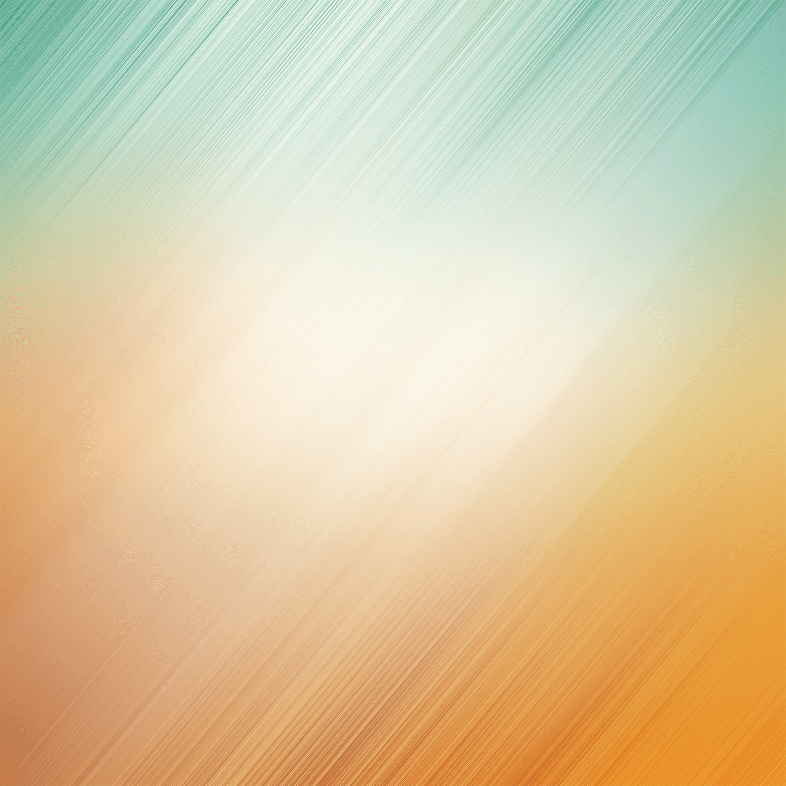

<link rel="stylesheet"  href="../lib/ionic/css/ionic.css">
<style type="text/css">
	.content{
		margin-top:50px;
	}
	img{
		width:100%;
		height: 100%;
	}
</style>

<ion-content class="content" scrollbar-y="false">
	<!--下拉刷新  -->
	<ion-refresher
	on-refresh="findCtrl.refresh()"
	on-pulling="findCtrl.pulling()"
	pulling-icon="ion-arrow-down-c"
	spinner = "lines"
	pulling-text="下拉刷新..."
	refreshing-text="正在刷新..."
	>

	</ion-refresher>

	<ion-list
	type="card"
	can-swipe="true"
	delegate-handle="myhandle"
	>
		<ion-item
		ng-repeat="item in findCtrl.items"
		class="item-thumbnail-left item-remove-animate"
		>
			
			<h2>{{item.title}}</h2>
			<p style="margin-top:30px">{{item.description}}</p>
		</ion-item>


	</ion-list>
	<!-- 上拉加载更多 -->
	<ion-infinite-scroll
		spinner = "bubbles"
		infinite-text="上拉加载更多..."
		on-infinite="findCtrl.loadMore()"
		distance="1%"
	>
		
	</ion-infinite-scroll>
</ion-content>